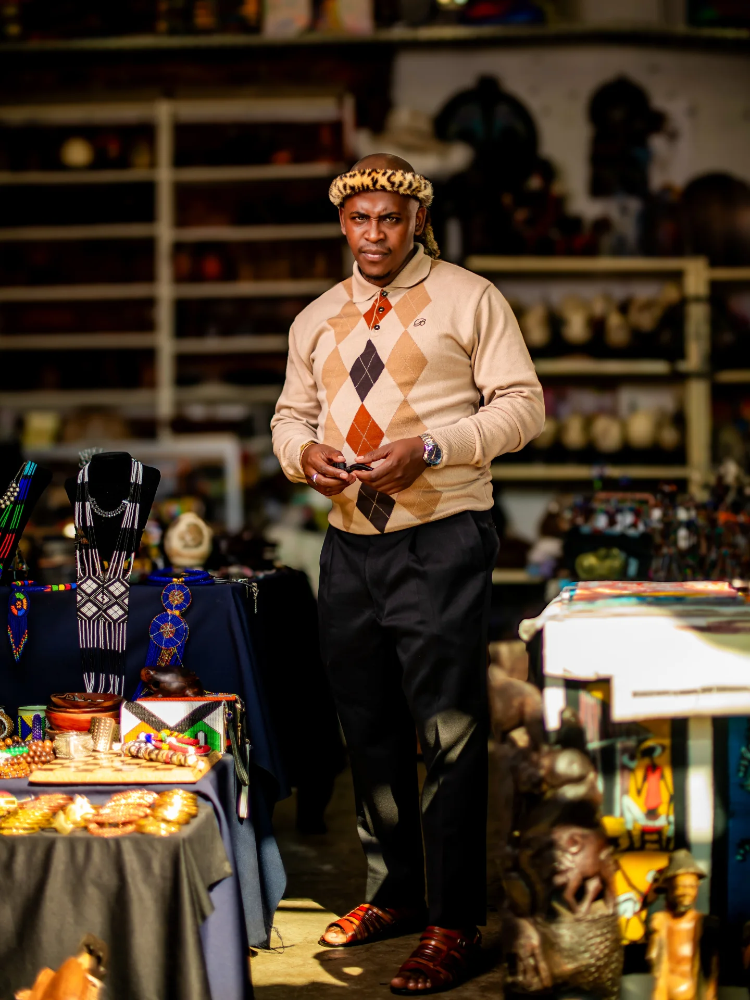
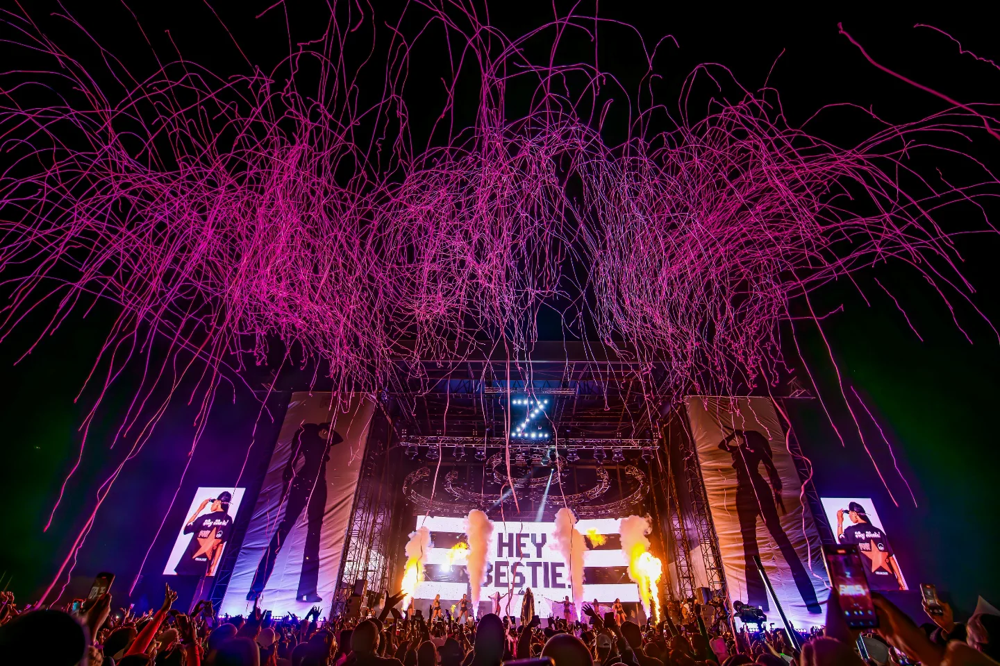
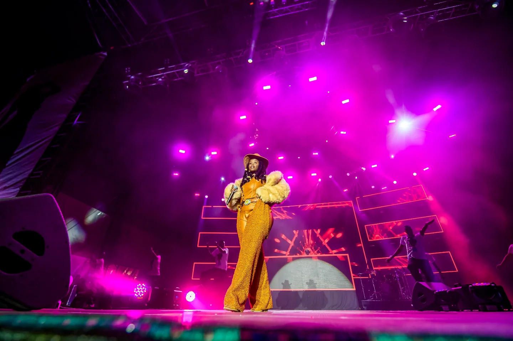
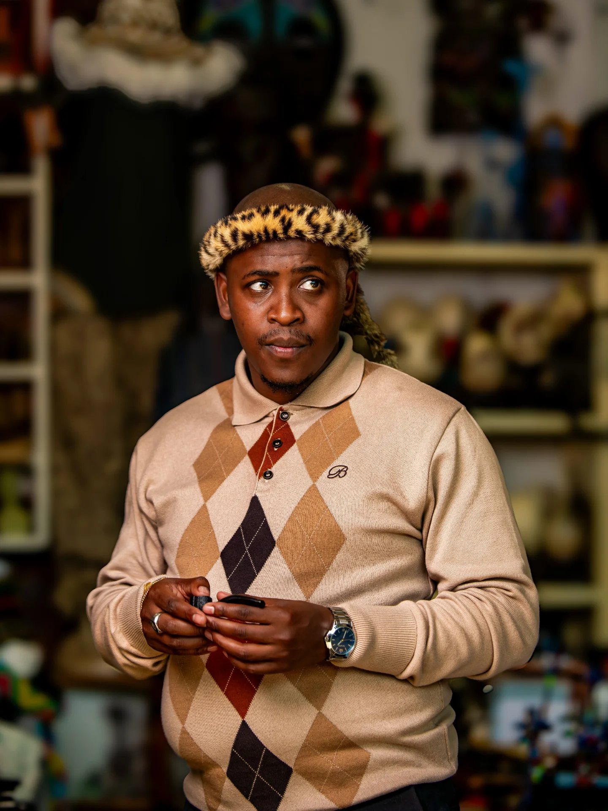
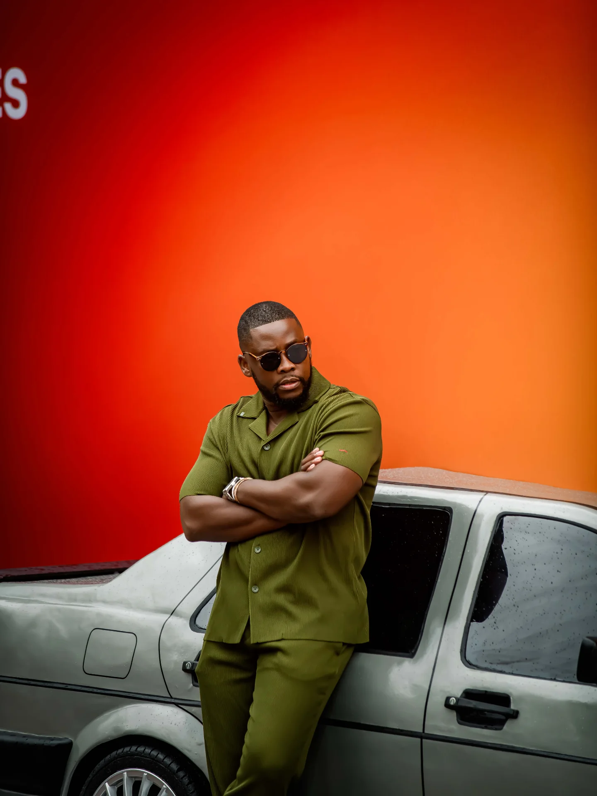
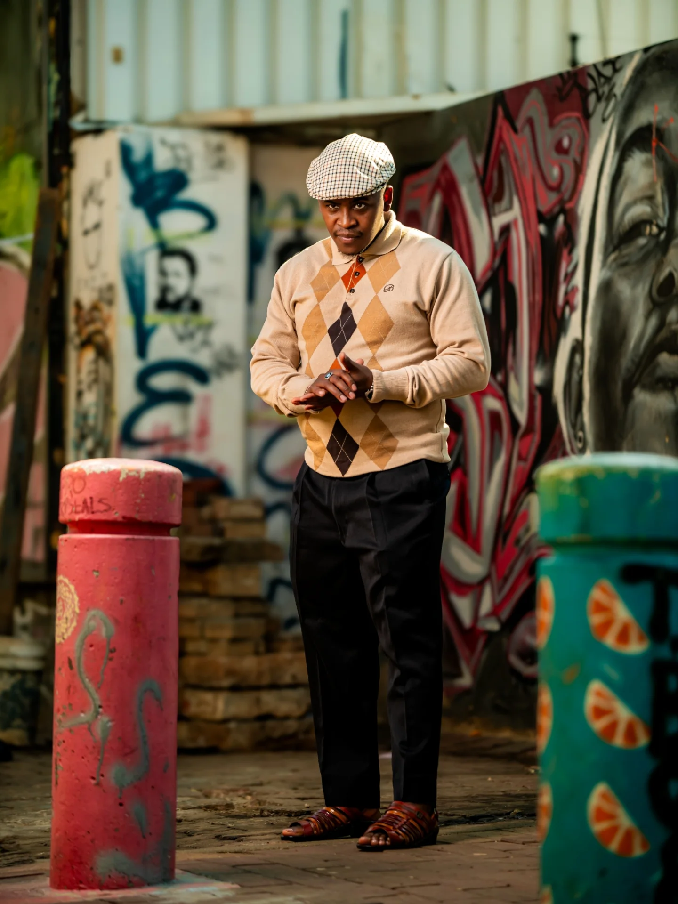
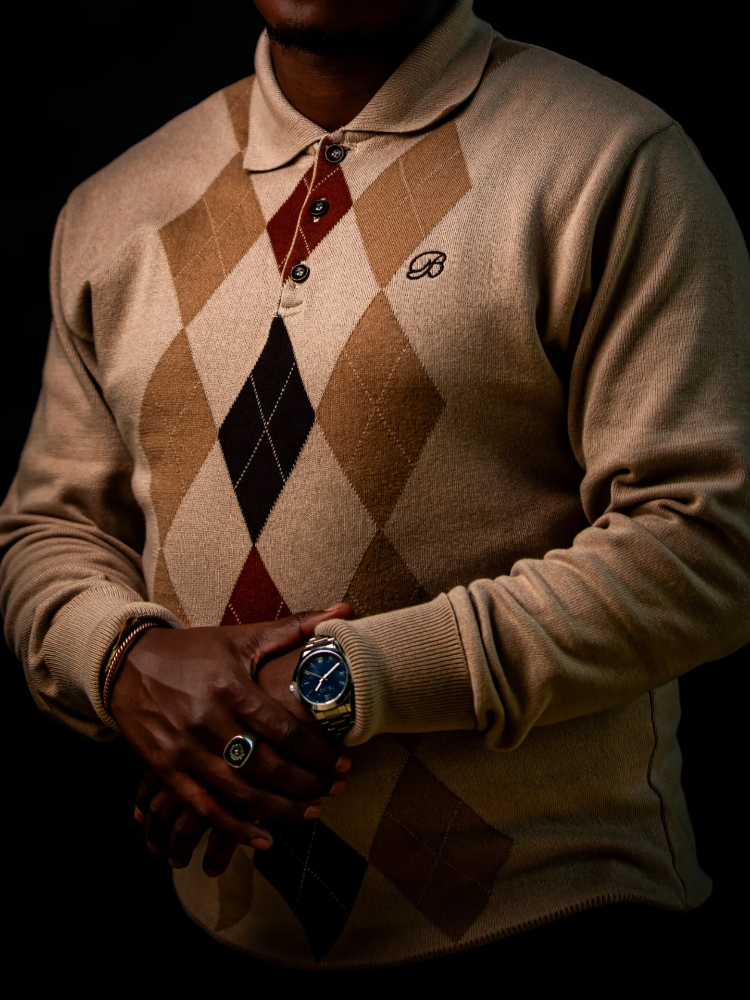
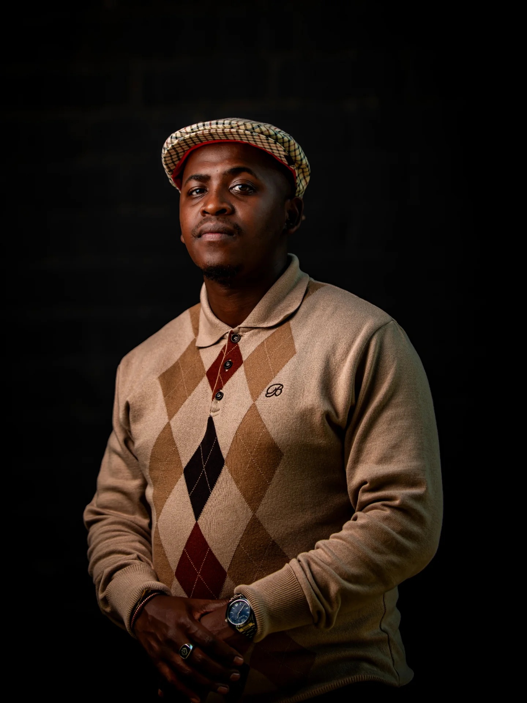
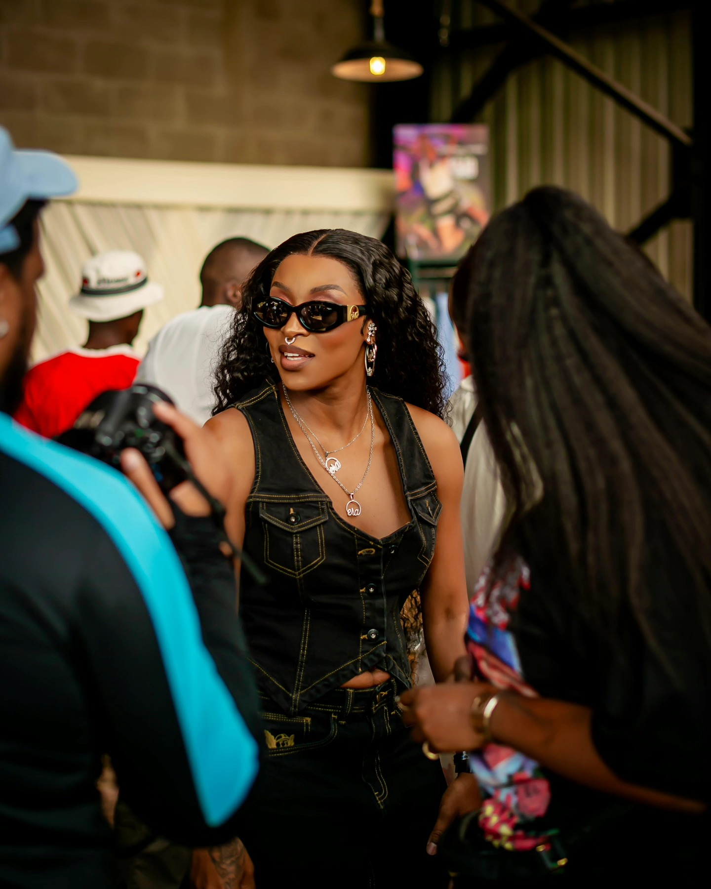

Photography that looks before it shoots.
Ant‑Eye is a portrait and editorial practice based in Durban, working with clients right across South Africa — from the coast to the Karoo.
The frame.
A selection of work across portraiture, editorial, events, and brand — real sessions, real stories.




Services.
From intimate portrait sessions to full editorial productions — based in Durban, available to travel anywhere in South Africa.
Portraiture
Individual and family sessions shot on location or in studio, built around natural light and real expression.
Editorial & Story
Concept-driven shoots for magazines, lookbooks, and personal projects — planned like a short film, not a checklist.
Brand & Product
Clean, considered imagery for small businesses and brands who need their product to feel as good as it is.
Events & Travel
Documentary-style coverage for events and travel commissions anywhere across South Africa, on short notice.
Clients.
A selection of brands and studios Ant‑Eye has shot for across South Africa.
@_anteye




Behind the lens.
Every session starts the same way — watching, before a single frame is shot.
Ant‑Eye Studio is a portrait and editorial practice built on patience: reading a room's light, letting a subject settle, and shooting only once it feels true rather than posed. The result is work that holds up outside the feed — on a wall, in print, years from now.
Based in Durban and available for travel, taking on portrait sessions, editorial stories, and small brand shoots right across South Africa.
Kind words.
A few notes from people Ant‑Eye has worked with, from Durban studio sessions to shoots on the road.
Made the whole session feel effortless — we forgot the camera was even there halfway through, which is exactly why the photos feel so real.
Flew out to Cape Town for our shoot and delivered a gallery that felt like a proper editorial story, not just a set of product shots.
Booked for our engagement shoot on the Durban beachfront — the light, the timing, the whole feel of the gallery was exactly what we wanted.

Need photography for your next project?
Based in Durban, available to shoot anywhere in South Africa — let's talk about it.
Book a session.
Tell me about the shoot — date, location, and the story you want told. I reply within 48 hours.
For bookings, collaborations, or press — reach out directly, or use the form and it'll land straight in the inbox.